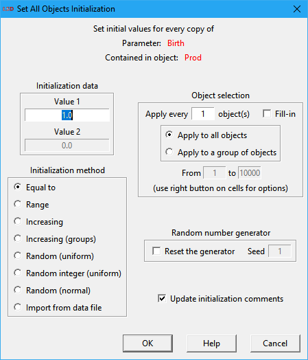

LSD Initial Values Editor

The LSD Initial Values Editor allows the entry and the modification of initialization values for Parameters and lagged Variables in a LSD model configuration. In the editor, initial values are inserted for a single Object type at one, for all its instances. The Object type shown is the current one in the LSD Browser.
A LSD simulation model needs initialization values to start a simulation run. Initial values must be assigned to Parameters and lagged Variables. In the latter case, the user must assign an initial value to be used in the first steps of the simulation run. Every element (Parameter or lagged Variable) requiring initialization must be assigned a numerical value for each instance contained in the model structure, that is, for each copy of the Object containing the element.
Editor window organization
The LSD Initial Values Editor is organized as a spreadsheet: each line referring to one element requiring an initial value (Parameter or lagged Variable) and each column indicating one instance of the Object containing that element. For instance, in the example above the initial values for the Parameter ms contained in an Object named Seller are the same (and equal to 0.1) for all the 10 instances of this Object. The exact Object instance to which the Parameters and Variables refer to is indicated by a number (from 1 to 10) on the columns' headers identifying the exact instance to which each cell refers to.
Variables which are used with one, two, or more lagged values will appear once for each lag, because initial values are necessary for each of the lags. Variables not used with lagged values do not appear in the Initial Values Editor.
As it is always the case in LSD, the decimal part of non-integer numbers must be separated by the “.” (dot), as in 0.01. The comma (“,”) is not accepted as the decimal separator. Numbers may also be specified using scientific notation, as in 1E+6, equal to 1000000 (or to the conventional mathematical format 1×106), or in 2E-3, equivalent to 0.002 (or 2×10-3 in math form).
The Initial Values Editor window size adjusts automatically to the current Object data.
The lowest part of the editor window contains the Help button and the Done button to return to the main LSD Browser (shortcut: Esc).
Instance numbering
Object types are assigned a unique name and can be replicated in as many instances as required. Therefore, there may be many copies of an Object under the same name, each containing the corresponding instances of the Object’s Parameters and Variables. This may create a problem when referring to one particular instance when necessary. Since any instance of an Object type is identical to every other instance, except for the values of Parameters and Variables, the easiest way to differentiate them is using their relative position in the model structure.
A model in LSD is structured as a hierarchy: on top is placed Object Root which can contain of descending (son) Object types, which in turn may contain (grandson) Objects, and so on. The automatic instance numbering assigns an (increasing) integer number to each “ancestor” instance. For example, consider a model with Object type Market (as son of Root), containing the Object types Supply and Demand (as grandsons of Root), the first of which contains Object type Producer (grand-grandson of Root). The number identifying an instance of Object Producer will contain three groups of numbers, as in XX-YY-ZZ. The first number refers to the Market instance of number XX, the second to the YY Supply instance, and the last to ZZ copy of Producer.
Inserting data manually
Data in the LSD Initial Values Editor cells can be directly edited. Users can insert values manually by moving through the cells. Simply click on the desired cell to edit it. Double clicking a cell allows directly overwriting the existing value. The Tab, Shift+Tab, Arrow Down and Arrow Up keys move forward and back through cells. The current entry cell also moves horizontally when the key Return is pressed.
Users can manually edit Objects with up to 100 instances, as the editor window is limited to show 100 columns. If an Object contains more than 100 instances, it is necessary to use the Set All button, available in the beginning of the lines, as described below. Alternatively, users can also manually initialize data, without the 100 instances limit, using the LSD Data Browser interface.
Inserting data automatically
Users can insert initialization values to Parameters and lagged Variables one-by-one, as described above. However, in most cases there are many instances of the elements to initialize, and the initialization follows a defined pattern. In this situation, using an automatic method to enter initial values is more appropriate. For this purpose, LSD offers the Set All button in the Initial Values Editor. The Set All button allows setting all (or a subset) of the required elements instances, by specifying an initialization method for each.

After clicking the Set All button (or the Initial Values option in the right-click context menu in the LSD Browser), the Set All Objects Initialization window offers the following options:
· Initialization data: define the numerical values to be used by the chosen initialization method. Depending on the method, these values have different meaning and some methods require a single value. In the example above, for the Equal to method just a single value (to assign to all elements) is required.
· Initialization method: set the initialization method to be applied, see the available options below.
· Object instances selection: specify to which of the Object instances to apply the initialization method. See the details below.
· Random number generator: control the operation of the pseudorandom number generator to ensure the replicability of the initialization values. When using one of the random initialization methods, the user can check Reset the generator and then chooses a specific integer Seed, in order to replicate exactly the same initialization sequence. This setting does not affect the pseudorandom seed during the simulation run (unless the initialization is performed during a debug break).
· Update initialization comments: checking this option causes the auto update of the textual description about the applied initialization of the changed element, to be used in the model documentation. This information is shown and can be edited in the Comments on initial values field in the Change Element dialog box.
Initialization method
The initialization methods available are:
· Equal to: the inserted data value is assigned to every selected instance of the element in the model.
· Range: the data values used for each selected instance are linearly attributed from the Minimum to the Maximum value. Given the number of elements to initialize, increasing values are assigned so the very first element is set to Minimum, the last one to Maximum, and the intermediate values to equally-spaced increasing values. For example, if the model contains 100 elements, Minimum = 1 and Maximum = 100, then the sequence of elements will be set to: 1, 2, 3, 4...
· Increasing: the data values of the selected instances are set to increasing values beginning from Start and adding Step after each assignment. For example, if Start = 12 and Step = 0.5, then the elements will be initialized with: 12.0, 12.5, 13.0, 13.5…
· Increasing (groups): same as Increasing but the initial value is reset to the Start value when a group of (brother) Objects descending from the same parent is finished and another group (brotherhood) begins. For example, consider a model made of an Object Market containing a set of Object Firm instances. Suppose the model contains also many Market instances, and therefore many groups of Firm instances (each group is a brotherhoods descending from the same Market). When initializing a Parameter in Firm using Increasing (group) and setting Start = 1 and Step = 1, the initial values for the Firm instances in the first Market will be set to 1, 2, 3… When the initialization reaches the first instance of Object Firm contained in the second Market instance, the sequence begins with 1, 2, 3… again.
· Random (uniform): a random value is assigned to each instance to initialize. The values are drawn from a uniform distribution whose lower bound is Minimum and the upper bound is Maximum.
· Random integer (uniform): a random integer value is assigned to each instance to initialize. The values are drawn from the set of integer numbers between Minimum and Maximum (including).
· Random (normal): a random value is assigned to each instance to initialize. The random values are drawn from a normal distribution defined by Mean and Std. deviation.
· Import from data file: use data from a file to set each instance to initialize. The file must be a text file formed by a single column of numeric values, being the first line ignored (possibly containing a label). The file must contain at least as many lines as the number of instances of the Object being initialized.
Object instances selection
The user may choose to initialize all or part of the Parameter and lagged Variable instances. Instance selection patterns allow the user to restrict the initialization method to a subset of the affected Object type copies. The available options are:
· Apply every … instances(s): defines the number of instances to be skipped between the consecutive application of the selected initialization method. When set to 1 (the default) the initialization method is applied to every instance of the element as they appear in the model. The user can choose to apply the initialization skipping a specified number of instances every time. For example, if one sets it to apply the initialization every 2 instances, then the first element will be set, the second is skipped, the third is set, the fourth is skipped, and so on.
· Fill-in: if checked, the chosen initialization method will fill also the intermediate instances with the current values. For example, suppose using the Increasing method and setting Start = 1 and Step = 1. If you set Apply every to 2 and Fill-in not checked, then you get the series 1, 0, 2, 0, 3, 0, 4, 0… (supposing the element was initially set to 0 for all instances). If, with the same settings, you mark Fill-in, you get the series 1, 1, 2, 2, 3, 3, 4, 4…
· Apply to all instances: if marked, the initialization is applied to all instances in the model, given the Apply every option restrictions.
· Apply to a range of instances: if checked, just a contiguous range of instances of this Object type is initialized. The range must be indicated with the ordinal number of the first (From field) and the last (to field) instances on which to apply the selected initialization method. For example, suppose the model contains 10 Object Market instances, each containing 20 instances of Object Firm. In order to initialize a Parameter in Firm, limiting to the instances of Firm in the second Market, the user needs to insert From = 21 and to = 40. Clicking on the From/to field entries with the right button of the mouse, the user can select the ordinal number of the Object instances by indicating the ordinal numbers of parent Object. See here for details on this last option.